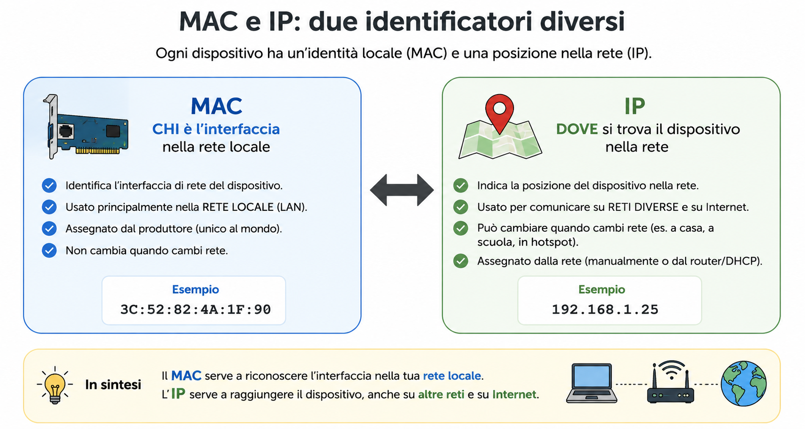
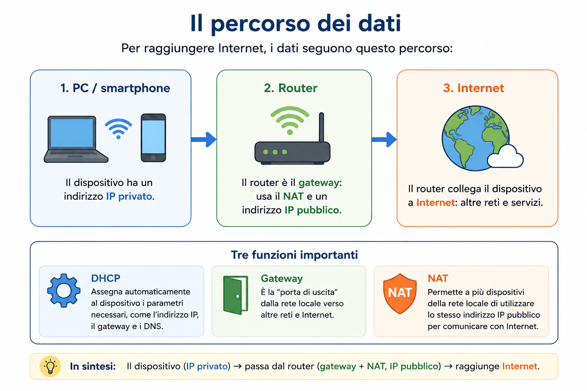
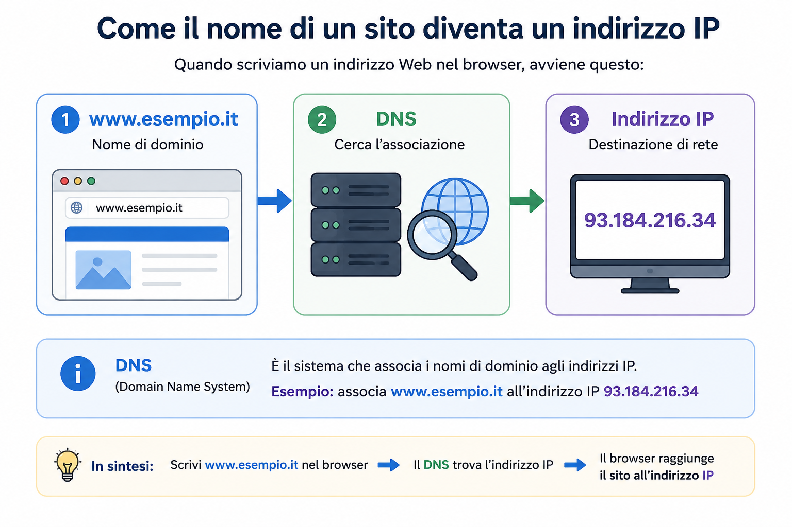
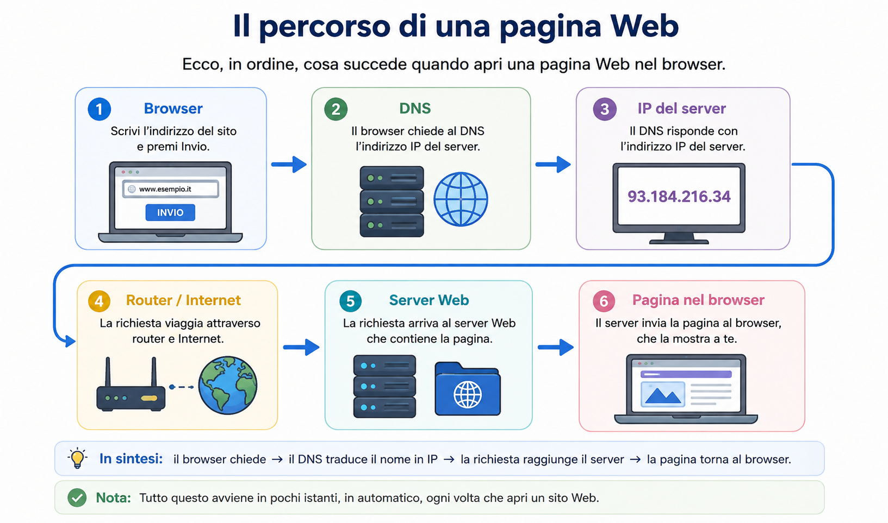

Un breve richiamo alla Lezione 10
Conosciamo già le LAN, che coprono un'area limitata, e le WAN, che collegano aree molto estese. Ogni dispositivo usa una scheda di rete per comunicare.
Nella rete locale lo switch collega i dispositivi, mentre il router collega reti differenti. I dati viaggiano su mezzi cablati o wireless: la banda indica quanti dati possono essere trasferiti in un intervallo di tempo; download e upload indicano rispettivamente ricezione e invio.
La fibra può arrivare fino a casa nell'FTTH (Fiber To The Home) oppure arrivare fino a una centralina o armadio stradale con FTTS (Fiber To The Street), spesso indicata anche come FTTC (Fiber To The Cabinet). In questo secondo caso l'ultimo tratto verso l'abitazione prosegue normalmente su rame.
Obiettivi della lezione
MAC address: l'identificatore dell'interfaccia
Immagina di osservare i dispositivi collegati alla rete di un'aula. Per distinguere l'interfaccia di rete di un computer da quella di uno smartphone serve un identificatore.
È un identificatore associato a un'interfaccia di rete e usato principalmente nelle comunicazioni della rete locale.
Un esempio è 3C:52:82:4A:1F:90. Le coppie contengono cifre esadecimali, cioè da 0 a 9 e da A a F.

Il MAC identifica l'interfaccia soprattutto nella LAN; l'indirizzo IP consente di raggiungere il dispositivo attraverso reti diverse.
IPv4: un indirizzo nella rete
Consideriamo 192.168.1.25: è formato da quattro numeri separati da punti. Ogni numero può andare da 0 a 255.
È un indirizzo IP di 32 bit che permette di identificare e raggiungere un dispositivo in una rete che usa IPv4.
Indirizzo privato
È usato all'interno di una rete locale, per esempio quella di casa o della scuola. 192.168.1.25 è un tipico esempio.
Indirizzo pubblico
È l'indirizzo con cui una rete o un dispositivo è raggiungibile attraverso Internet. Nelle reti domestiche è normalmente associato al router.
DHCP, gateway e NAT
Quando uno smartphone entra nella rete Wi-Fi di casa, in genere non dobbiamo assegnargli manualmente tutti i parametri. Il collegamento viene preparato automaticamente.
DHCP
Assegna automaticamente al dispositivo i parametri necessari per collegarsi alla rete, tra cui un indirizzo IP.
Gateway
È normalmente il router attraverso il quale il dispositivo raggiunge altre reti e Internet.
NAT
Permette ai numerosi dispositivi di una rete domestica di comunicare con Internet utilizzando l'indirizzo pubblico del router.

Perché nasce IPv6?
Se sempre più dispositivi devono avere un indirizzo, gli indirizzi IPv4 possono bastare per sempre?
IPv4 usa 32 bit e offre quindi un numero limitato di indirizzi. La crescita enorme di computer, smartphone e altri dispositivi connessi ha reso necessario uno spazio di indirizzamento molto più ampio: per questo è stato introdotto IPv6, che usa 128 bit.
IPv4
192.168.1.25
32 bit; quattro numeri decimali separati da punti.
IPv6
2001:db8:1234:5678::10
128 bit; gruppi separati da due punti e cifre esadecimali.
Per questa lezione basta saperli riconoscere visivamente e spiegare che IPv6 è stato introdotto soprattutto per disporre di moltissimi più indirizzi.
DNS e nomi di dominio
Le persone ricordano facilmente un nome come www.example.it; i dispositivi, per comunicare in rete, devono conoscere un indirizzo IP.

- Nome di dominio
- Nome facile da ricordare che identifica un dominio, per esempio
wikipedia.org. - Indirizzo IP
- Indirizzo necessario per raggiungere un dispositivo o un server nella rete.
- URL
- Indirizzo completo di una risorsa Web; può comprendere protocollo, dominio e percorso.
Internet, WWW, browser e server Web
Browser
È il programma che richiede, riceve e visualizza le pagine Web, per esempio Firefox, Edge o Chrome.
Server Web
È il sistema che fornisce al browser le risorse Web richieste.
Protocolli applicativi: HTTP e HTTPS
Un protocollo stabilisce regole condivise per la comunicazione. Servizi differenti usano protocolli differenti.
HTTP
È un protocollo usato per richiedere e trasferire risorse del Web.
HTTPS
È HTTP con protezione della comunicazione: i dati scambiati vengono cifrati e l'identità del sito può essere verificata tramite un certificato.
Altri esempi sono SMTP per l'invio della posta elettronica, IMAP per consultarla sul server e FTP per il trasferimento di file. Qui è sufficiente riconoscere che hanno compiti diversi.
Ricostruiamo il viaggio
Scrivo www.wikipedia.org e premo Invio. Che cosa accade?
- Il browser legge il nome.
Riconosce il dominio indicato nell'indirizzo Web.
- Il DNS cerca l'indirizzo IP.
Associa
www.wikipedia.orga uno o più indirizzi del servizio. - La richiesta raggiunge il gateway.
Il router permette al dispositivo di uscire dalla rete locale; in una rete domestica può intervenire il NAT.
- I dati attraversano Internet.
La richiesta viene instradata attraverso più reti verso il server.
- Il server Web risponde.
Riceve la richiesta tramite HTTP o, normalmente, HTTPS e restituisce le risorse necessarie.
- Il browser visualizza la pagina.
Interpreta le risorse ricevute e le presenta sullo schermo.

Questa rappresentazione è semplificata: non mostra tutti i dispositivi e tutti i passaggi tecnici, ma collega correttamente i concetti essenziali.
💻 Laboratorio guidato — Osserva la rete in Windows
- Apri il menu Start.
Scrivi cmd e apri il Prompt dei comandi.
- Mostra le informazioni principali.
Scrivi
ipconfige premi Invio. - Individua la scheda attiva.
Cerca la sezione Wi-Fi oppure Ethernet che contiene valori compilati.
- Osserva IPv4, IPv6 e gateway.
Annota soltanto se sono presenti. Non condividere pubblicamente gli indirizzi rilevati.
- Mostra più dettagli.
Scrivi
ipconfig /alle premi Invio. - Cerca DHCP e MAC.
Osserva le voci relative a DHCP e l'«Indirizzo fisico», cioè il MAC address.
- Interroga il DNS.
Scrivi
nslookup www.wikipedia.orge premi Invio. - Confronta nome e risultati.
Osserva che il nome viene associato a uno o più indirizzi IP, che possono essere IPv4 o IPv6.
- Chiudi il Prompt.
Scrivi
exite premi Invio.
🧠 Attività di consolidamento
Rispondi prima senza aprire la soluzione.
1. 192.168.1.15 è IPv4 o IPv6?
È IPv4: presenta quattro numeri decimali separati da punti.
2. 2001:db8::8a2e:370:7334 è IPv4 o IPv6?
È IPv6: usa gruppi con cifre esadecimali separati da due punti.
3. Qual è la differenza principale tra MAC address e IP?
Il MAC identifica un'interfaccia soprattutto nella rete locale; l'IP indica dove raggiungere il dispositivo nella rete.
4. A cosa serve il DNS?
Associa i nomi di dominio agli indirizzi IP.
5. Internet e WWW sono la stessa cosa?
No. Internet è la rete globale di reti; il WWW è uno dei servizi che la utilizza.
6. Perché è stato necessario introdurre IPv6?
Perché gli indirizzi IPv4 sono limitati e i dispositivi connessi sono cresciuti enormemente. IPv6 usa 128 bit e offre moltissimi più indirizzi.
7. Quale protocollo utilizza normalmente un sito Web protetto?
HTTPS, che protegge la comunicazione tra browser e server Web.
Prova a spiegarlo a voce
Formula prima una risposta breve; poi aggiungi un esempio concreto.
Qual è la differenza tra MAC address e indirizzo IP?
Il MAC identifica l'interfaccia soprattutto nella rete locale; l'IP permette di localizzare e raggiungere il dispositivo nella rete. Per esempio, una scheda può avere un MAC come 3C:52:82:4A:1F:90 e un IPv4 come 192.168.1.25.
Come riconosci un indirizzo IPv4?
È formato da quattro numeri da 0 a 255 separati da punti e usa complessivamente 32 bit.
Perché è stato introdotto IPv6?
IPv4 dispone di un numero limitato di indirizzi. Con la crescita dei dispositivi connessi è stato introdotto IPv6, che usa 128 bit e offre uno spazio di indirizzamento molto più ampio.
Qual è il compito del DNS?
Il DNS associa nomi di dominio facili da ricordare agli indirizzi IP necessari per raggiungere i servizi in rete.
Internet e WWW sono la stessa cosa?
No. Internet è l'infrastruttura globale di reti; il WWW è un servizio che usa Internet per fornire pagine e altre risorse Web.
Che cosa succede, in modo semplificato, quando digiti l'indirizzo di un sito nel browser?
Il browser usa il DNS per ottenere l'IP del server; la richiesta passa dal router e attraverso Internet, raggiunge il server Web tramite HTTP o HTTPS, poi la risposta torna al browser, che visualizza la pagina.
Riepilogo finale
🎒 Lo zaino dello studente
Le idee essenziali per ricostruire il viaggio di una pagina Web.
✅ Idee fondamentali
- MAC e IP hanno ruoli differenti.
- IPv4 usa 32 bit; IPv6 ne usa 128.
- DHCP assegna parametri, il gateway conduce fuori dalla LAN e il NAT condivide l'IP pubblico.
- Il DNS associa domini e indirizzi IP.
- Internet è l'infrastruttura; il Web è un servizio.
📝 Parole chiave
- MAC
- IPv4
- IPv6
- DHCP
- gateway
- NAT
- DNS
- HTTPS
🔢 Sequenza da ricordare
Browser → DNS → IP → router e Internet → server Web → HTTPS → pagina.
🎤 Ripasso in 2 minuti
Parti da www.wikipedia.org e racconta il viaggio usando almeno sei parole chiave.